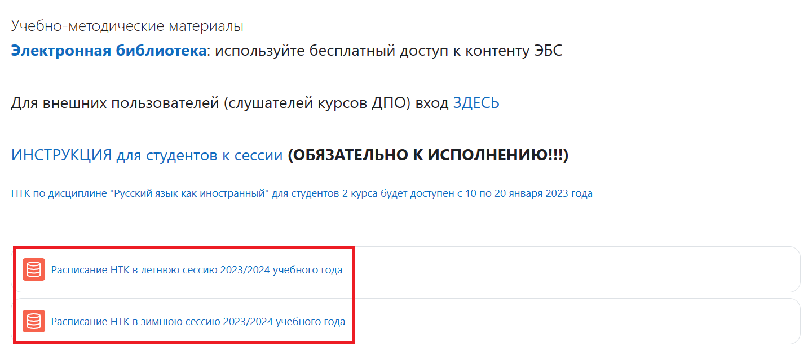
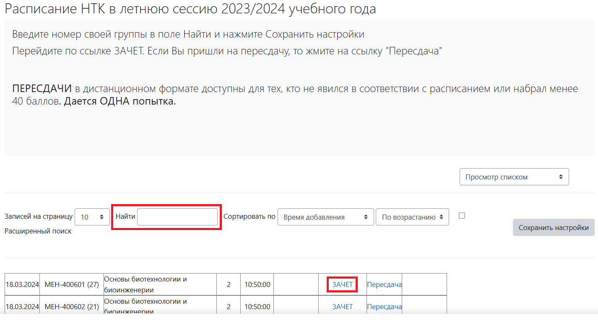
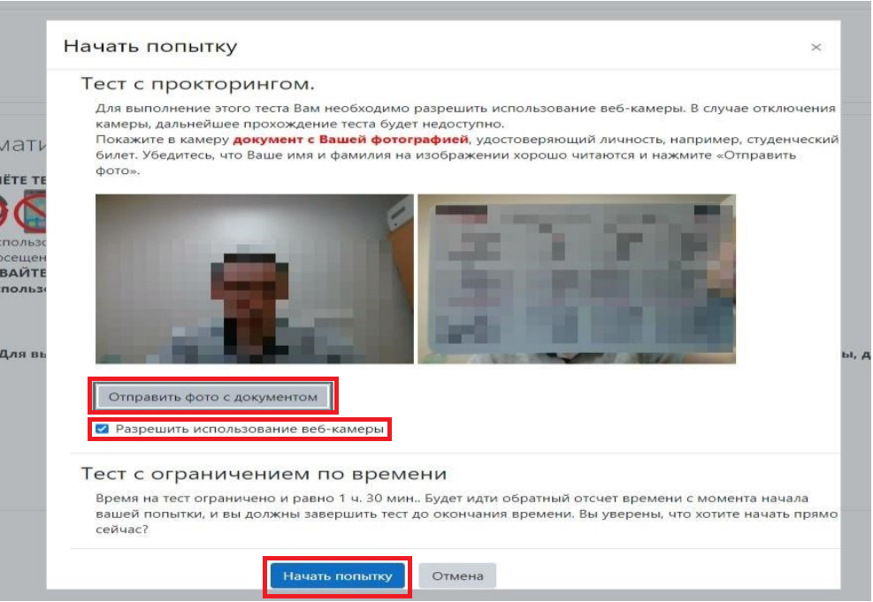
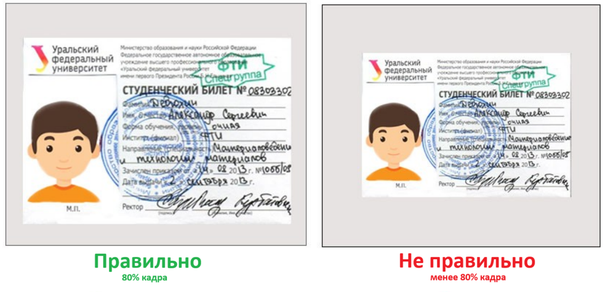

Тестирование (НТК) проходит на сайтах https://exam1.urfu.ru/, https://exam2.urfu.ru/.
Нажмите на «Расписание НТК в зимнюю/летнюю сессию … учебного года».
В поле «Поиск» введите номер академической группы, затем выберите предмет и нажмите на кнопку «ЗАЧЕТ».
Разрешите доступ к камере. Во время НТК камера будет делать снимки вашего лица каждые 30 секунд, поэтому ваше лицо должно быть хорошо освещено. Не забывайте, что в комнате не должно быть посторонних людей.
Сделайте снимок документа (студенческий билет/паспорт).
После завершения тестирования вы сможете ознакомиться с результатами итогового контроля.
Следите за своими баллами в БРС. Они могут появиться не сразу. Если в БРС стоит 1 балл из 100, это означает, что экзамен не зачтён. Вам на почту придёт сообщение с указанием причины. Если же вы увидите свой балл за контроль в БРС, экзамен считается успешно сданным.
Важно: если вы используете черновик, перед началом экзамена покажите лист бумаги в камеру с обеих сторон.